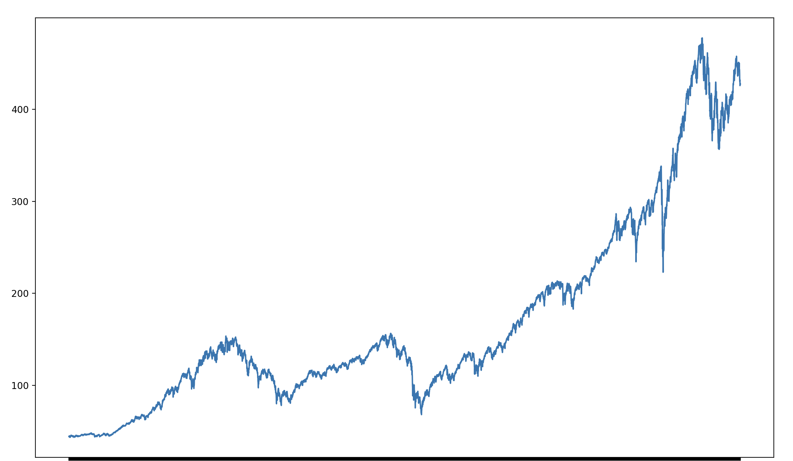

The Problem
The purpose of this project is to research trends on the S&P 500 based on day-to-day statistics.
The Data
I am using the historical SPY dataset from Yahoo Finance. This dataset is updated daily, with records all the way back to January 28th, 1993, which was the first trading day for the ETF.
Pre-Processing
There was some very important clarifications I had to make to validate the data I was using. For example, if I wanted to use volume as an indicator, I needed to make sure the dataset accounted for stock splits. Successful stocks and indexes will have stock splits to keep share prices low for retail investors. Surprisingly to me, the SPY ETF has never forgone a stock split. Other things I had to account for were nulls in the dataset. To look for nulls, I iterated through the dataset to find out it is very well cleaned.
Data Visualization
This is the all-time graph of the S&P 500, so from 1993 to today.
Modeling
My first decision tree plot was definitely a surpise to see. Since I used a numerical value in volume, the decision tree got very precise due to the 7723 days of data. From a visualization aspect, this image is pretty useless as there are too many leaves to be able to understand it. The plot looks like art so I just wanted to share it.
To make the graph more readable, I chose to limit the depth of the tree to 3.
Evaluation
My models performed well in the sense that they did everything correctly. The gini index was my main indicator of success, as anything outside the norm would have been surprising to me. A normal gini index lays around .5, so when it swayed towards 0 or 1 I got some abnormality out of it. Unfortunately, the main time there were swayed gini indexes was when there were low sample sizes, which means that there is a high probability of it not being significant.
What I learned
I learned that even though I didn't get a surprising result, there is still a lot I got out of this experiment. One thing I would do differently next time is choose a different model. Most values I used were numerical, and with such a wide range of numbers the decision tree took a long time to slim it down. Once it did slim it down, the data was overfit and was close to useless.
Impact
Doing tests like these just show how complex and unpredictable the stock market is. Using simple indicators is not enough to predict the future. My project defends the points that the average person does not have the tools and resources to predict the markets daily moves.